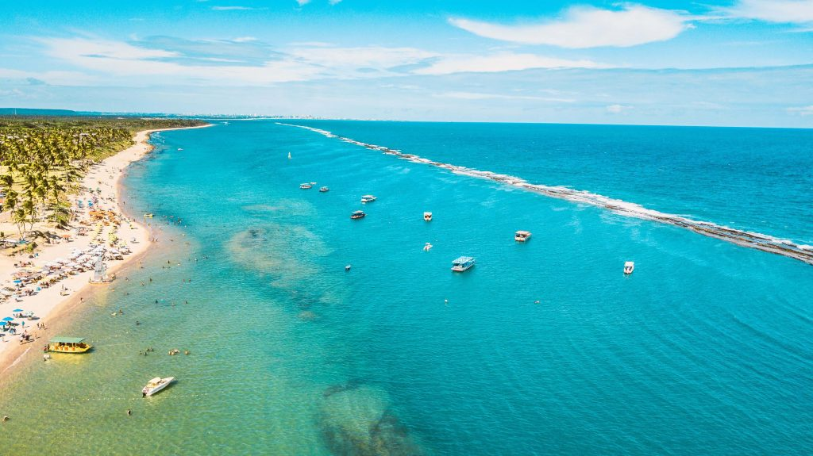

CONHEÇA AS MELHORES PRAIAS DE ALAGOAS
1. Maragogi
O sucesso de Maragogi deve-se, principalmente, às suas águas cristalinas, que no período de maré baixa formam lindas piscinas naturais cheias de peixinhos, as chamadas Galés de Maragogi, que podem ser conhecidas através de um passeio de lancha ou barco. As praias da região, sempre muito sossegadas, também não ficam para trás e exibem um mar esverdeado, que fez com que o lugar ganhasse o título de Caribe brasileiro.
Maragogi é um ótimo destino para pessoas de todas as idades, para descansar embaixo das sombras de seus coqueiros, curtir as praias sem pressa e aproveitar sua gastronomia, com peixes e frutos do mar frescos. A cidade tem uma estrutura pequena e é realmente muito pacata, o que faz com que os preços por lá sejam bem razoáveis comparados a outros destinos da região.
Passeios de buggy, passeios de barco, praias desertas, sossego e restaurantes deliciosos... Maragogi é um destino que cabe no bolso e um lugar onde o clima pacato se destaca. Passando alguns dias na cidade você pode comer boas lagostas, conhecer o bolo de goma (biscoitinho local irresistível) e, principalmente, relaxar e desfrutar de uma região bucólica. Maragogi é um lugar simples, que ainda tem pouca estrutura e carece de cuidados básicos, mas para quem procura descanso e quer ficar distante de grandes centros urbanos, revigora a mente e o corpo.
2. Praia do Francês
Uma das vantagens da Praia do Francês é que o mar tem um lado mais calmo e outro agitado. No lado esquerdo, por exemplo, devido aos arrecifes, a praia fica uma verdadeira piscina natural. Enquanto no lado direito, onde tem coqueiros e mais ventos, há ondas para quem curte surfar. Ou seja, ela é perfeita para qualquer público
Fora isso, a sua orla foi revitalizada recentemente e tem um calcação muito gostoso para caminhar, andar de bicleta ou até tirar fotos no entardecer. Há, também, uma excelente infraestrutura com quiosques, restaurantes e ambulantes à beira-mar.
3. São Miguel dos Milagres
Os caminhos que nos levam até São Miguel dos Milagres por si só já é um milagre da natureza. A rota ecológica, como é conhecida, nos encanta já na travessia da balsa no Rio Manguaba, que divide os municípios de Japaratinga, Porto de Pedras e, por último, São Miguel dos Milagres. Praias desertas, imensos coqueirais e pequenas vilas são a magia deste lugar. Em Porto de Pedras, encontra-se o Rio Tatuamunha e você pode realizar um passeio de jangada pelo chamado “Santuário do Peixe-boi”, o dócil mamífero ameaçado de extinção. Os ribeirinhos da Associação do Peixe-boi fazem o acompanhamento deste inesquecível passeio, além de preservarem o habitat natural dos animais. Por isso, o número de visitantes é limitado.